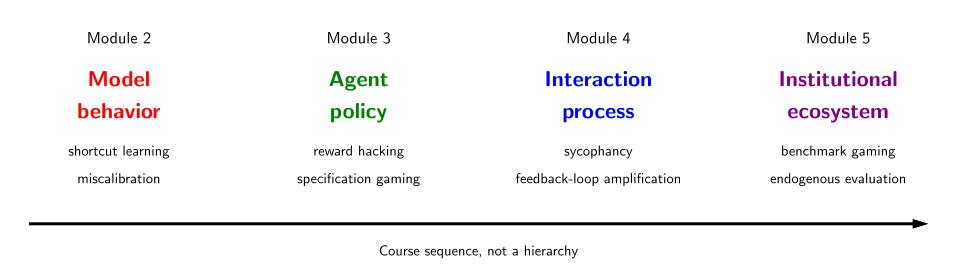

Module 1: Framing Safety and Assurance.

This is a course about AI safety. Part of the course is organized by adapting a pedagogical abstraction from Stanford's CS 221, Artificial Intelligence: Principles and Techniques, which organizes AI systems into a basic paradigm of increasingly expressive representations and their instantiation as artifacts.
What makes this course distinct is that it asks different questions, and the use of the abstraction shifts accordingly. Machine learning focuses on using large amounts of data to train a model. Types of AI systems can likewise be organized by the expressiveness of their representation. However, the stages of instantiation are mostly fixed: modeling, learning, and inference. If done properly, the resulting model will be able to make usable inferences beyond the training examples, i.e., generalization. This can be formalized with statistics and probability theory.
The basic shift in the study of AI safety is that successful generalization is not taken as the end of the story. Instead, the focus is on what types of assurance are required as optimization pressure in increasingly capable systems exploits misspecification, incomplete evaluation, feedback processes, and institutional structure.
Ultimately, evaluation itself is an object of optimization. Institutions, groups of individuals, and environments shape norms and influence what is considered sufficiently "safe." These groups can game the specification of what is considered safe and can influence how the evaluation of safety is carried out or interpreted. Classical safety asks whether a system is acceptable; this course also asks when the process for deciding acceptability itself becomes an object of optimization. Who defines, measures, and assesses "safety" will become a central aspect of the AI safety problem as the course progresses.
Fixing a unit of analysis fixes which artifact or system's behavior must be assured. The interest here extends beyond certifying statistical generalization. Assurance consists of identifying hazards and characterizing the risk that potential harms are realized by the system.
These terms are distinguished in causal order. A failure is a component or process departing from its intended behavior. A hazard is a system condition or mechanism that is a source of potential harm; it is often what a failure leaves behind. Risk is the chance and severity that a hazard is realized as harm, and it depends on operating conditions. A harm is a realized outcome that is negative to interests. While the hazard may originate from a generalization failure - i.e. spurious or shortcut learning - the potential harms and their mitigation require assurance beyond generalization. Finally, the nature of the appropriate assurance also depends on the expressiveness and context of the relevant system implementation.
Consider a content filter trained on crowd-sourced toxicity labels. Shortcut learning that fits dialect as a proxy for toxicity is a failure. The resulting spurious correlation in the deployed filter is a hazard. The risk depends on prevalence of the dialect versus toxicity, the scale of the deployment, and the impact of wrongful filtering. One potential harm could be systematic filtering of content from speakers of that particular dialect. The risk of this harm would depend on the operating conditions of that filter.
Four levels of expressiveness are recognized. Reflex-based systems simply perform a fixed sequence of operations on a given input. Examples include image classifiers, spam filters, and thermostat-like control systems. State-based systems model the state of a world and transitions between states which are triggered by actions. Examples include factory-line robots, chess engines, and LLMs with simple tool-use loops. Variable-based systems represent a desired solution as an assignment subject to constraints or other factors. Examples include Uber routing, airline scheduling, and object tracking. Finally, logic-based systems represent knowledge, rules, and constraints as logical formulas and derive consequences using explicit inference rules. Examples include theorem provers, expert systems, and access-control management systems.
Three stages of implementation are also recognized. Modeling sets the architecture of the AI system and determines which aspects can be adjusted. Learning determines how the system is adjusted, whether through data, optimization, prompt iteration, or other forms of adaptation. Inference determines how the system is deployed or used for its end purpose. The stages locate where hazards enter: a hazard may be introduced by a modeling choice, amplified by a learning procedure, and realized as harm only at inference in deployment.
With these abstractions in place, the recurring question of the course has a simple slogan:
What must be assured for this module, and what can optimization pressure exploit?
The aim is to break down assurance by unit of analysis, hazards, and potential harms, with case studies based on typical systems.
The four modules that follow each study one unit of analysis: reactive model behavior and development-time optimization (module 2), sequential decision-making and agency (module 3), adaptive interaction and sociotechnical dynamics (module 4), and evaluation, governance, and institutional assurance (module 5). Later modules inherit rather than replace the hazards introduced in earlier ones.
| Module | Unit of analysis | Failure Modes | Hazards | Potential Harms | Typical Systems |
|---|---|---|---|---|---|
| 2 | Model behavior | shortcut learning, adversarial vulnerability, miscalibration, distribution-shift failure | spurious correlations, untested inputs, evaluation blind spots | wrongful filtering or denial, unequal error burdens, unsafe decisions, degraded reliability | classifier, content filter |
| 3 | Agent policy | reward hacking, specification gaming, unsafe exploration, instrumental subgoals | proxy rewards, world-model errors, side-effects, long horizons | physical or economic damage, resource loss, policy violations, irreversible side-effects | chess engine, robot planner, tool-using LLM |
| 4 | Interaction process | sycophancy, manipulation, preference shaping, feedback-loop amplification | human bias, feedback channels, strategic responses, non-stationarity | distorted decisions, loss of autonomy, entrenched inequities, degraded information environments | recommender, team coordinator, assistant |
| 5 | Institutional ecosystem | benchmark gaming, endogenous evaluation, regulatory capture, coordination failure | metric definitions, evaluator dependence, jurisdiction gaps, opportunities to externalize costs | systemic externalities, weakened oversight, concentrated power, persistent unsafe deployment | platform market, regulatory deployment, benchmarking organization |
This course will progress through each of the four modules one at a time. However, it should be emphasized that each unit of analysis is a perspective, not a declaration of exclusive categories. For example, it is possible for an RL agent to use reflexes to navigate an environment. Similarly, assurance will not always cleanly reduce to one module of analysis. Finally, we emphasize the modules are neither exclusive categories nor hierarchical.
In summary, the basic vocabulary of hazards, potential harms, and risks was introduced. Beyond the organizing modules, there are two further questions to be addressed. First, what is the object of assurance? Second, what counts as an assurance claim? These will be the subject of the subsequent notes in this module.